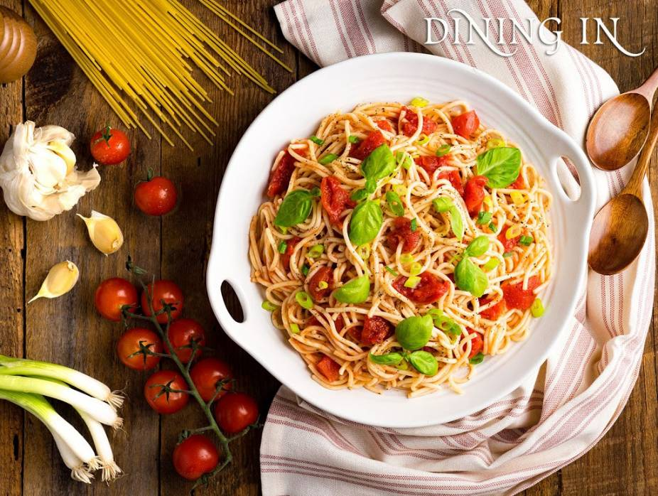
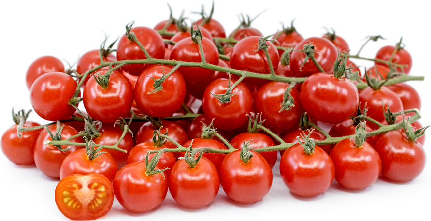
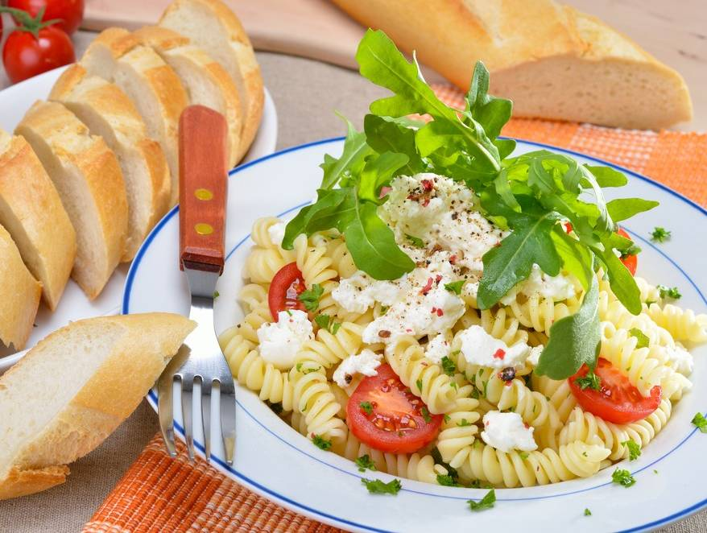
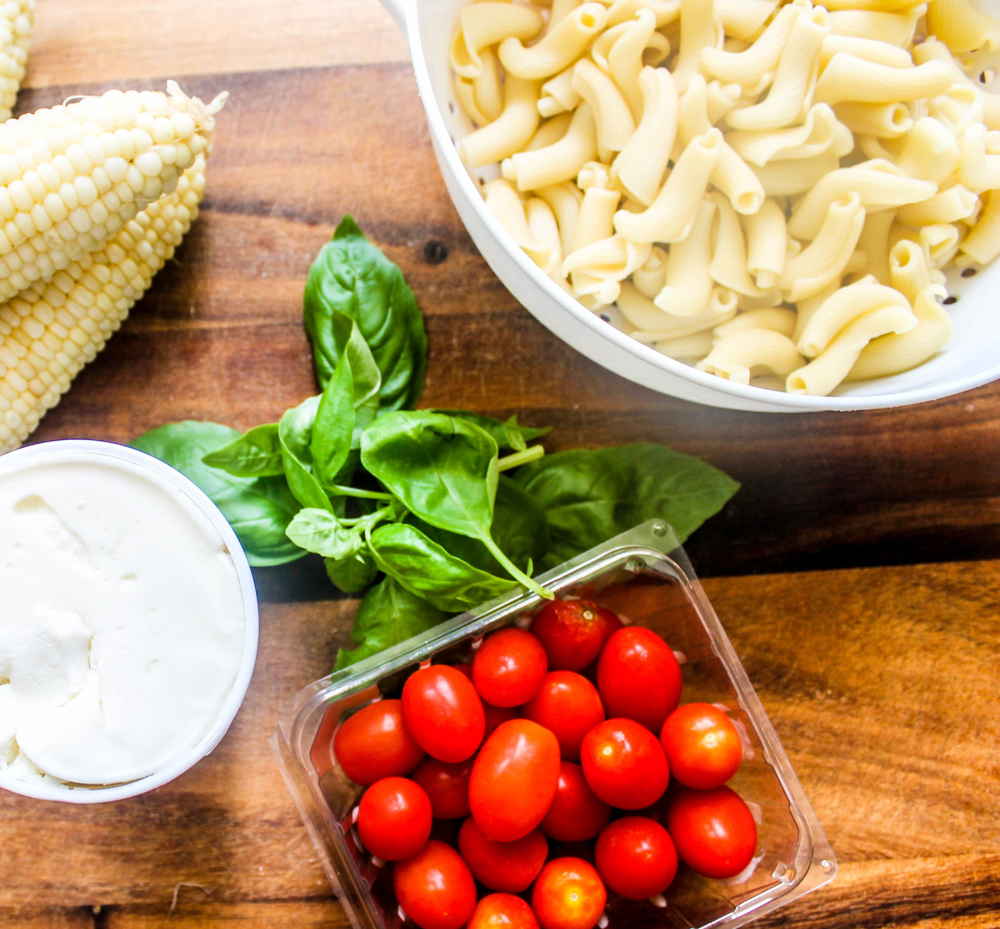

Slice olives in half. Drain and dice Israeli pickles. Add olives and pickles to salad.
Add all the diced vegetables.
In a separate bowl, mix dressing ingredients of your choice; pour over salad, and mix.

Tomato Basil Pasta Salad
Difficulty: Easy
Diet: Vegetarian , Vegan , Pescetarian , Low Fat , No Refined Sugar
Cooking and Prep: 45 min
Serves: 6
Allergy: contains GLUTEN
Author: Kosher.com
Ingredients
3/4 box Tuscanini Spaghetti Pasta or other thin spaghetti
1/3 cup diced scallions
4 cloves garlic
Gefen Olive Oil
1-28 ounce can whole tomatoes
2 teaspoon basil
salt, to taste
black pepper, to taste

Prepare the Salad
Cook and drain spaghetti according to package directions.
Sauté scallions and garlic in olive oil for 10 minutes on low flame. Dice tomatoes and add to pot. Add remaining ingredients.
Cover and cook for 15 to 20 minutes over low flame.
Stir spaghetti into tomato mixture. Serve chilled
Roasted Cherry Tomato and Ricotta Pasta Salad
Oven-roasted tomatoes and fresh ricotta top this delicious classic pasta salad.

Difficulty: Easy
Diet: Vegetarian, Pescetarian
Cooking and Prep: 30 min
Serves: 6
Allergy: contains GLUTEN, DAIRY
Author: KosherScoop.com
Ingredients
1 pound pasta, such as rigatoni or Tuscanini Penne Pasta
1 pint cherry tomatoes, halved (about 2 cups)
2 tablespoons Bartenura Olive Oil, plus more for serving
Haddar Kosher Salt
black pepper
10 sprigs fresh thyme
1 and 1/2 cups fresh ricotta
zest of 1 lemon

Roast the Tomatoes
Preheat oven to 425 degrees Fahrenheit.
Arrange the tomatoes in a single layer on a baking sheet. Drizzle with oil, season with half a teaspoon salt and a quarter-teaspoon pepper. Scatter thyme on top
Place tomatoes in oven and bake until soft, about 15–20 minutes. Set aside to cool.
Assemble
Divide pasta among six large bowls. Spoon some of the ricotta over each serving. Top with tomatoes and thyme.
Drizzle with the oil and sprinkle with the lemon zest and pepper to taste just before serving.
Note: Adapted from Stephana Bottom, Real Simple magazine, June 2004.